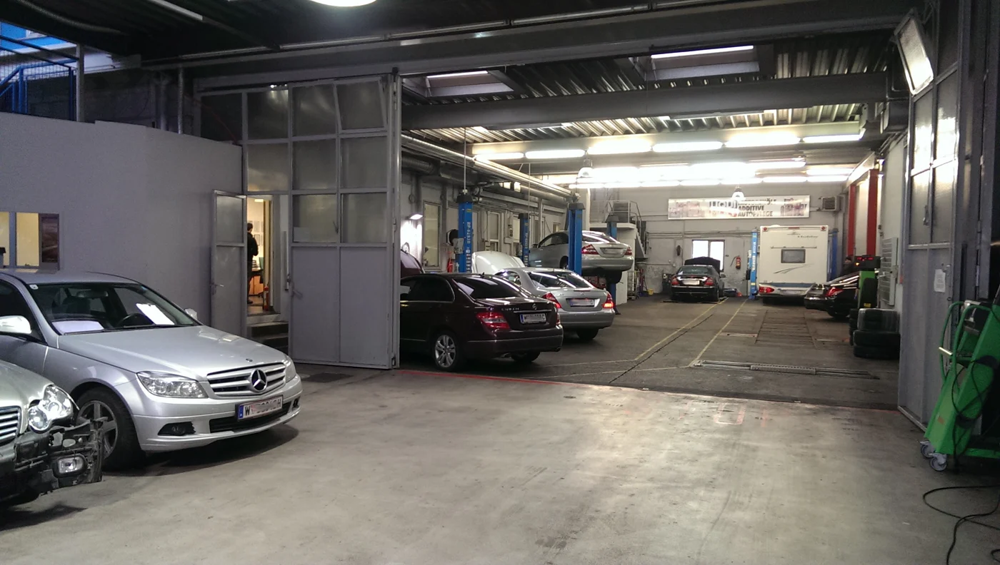
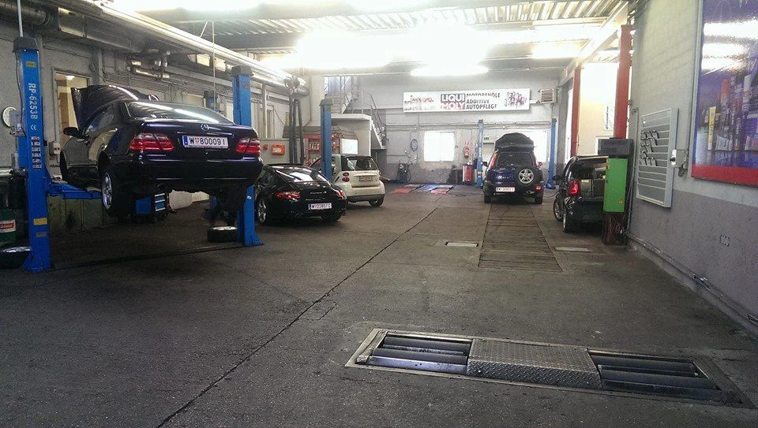
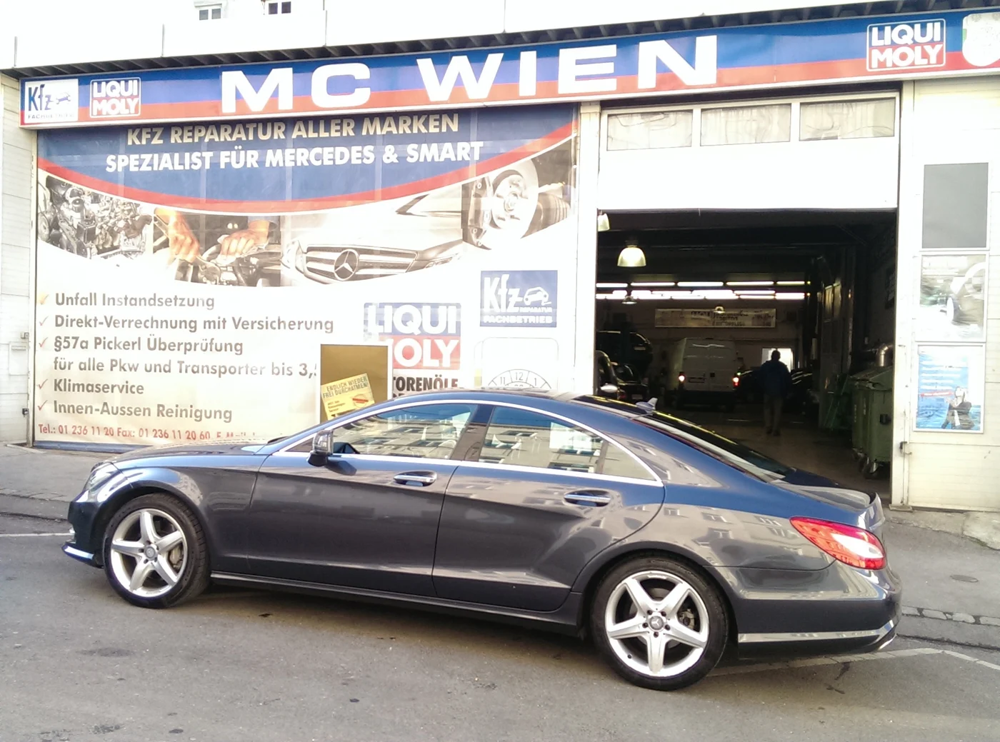
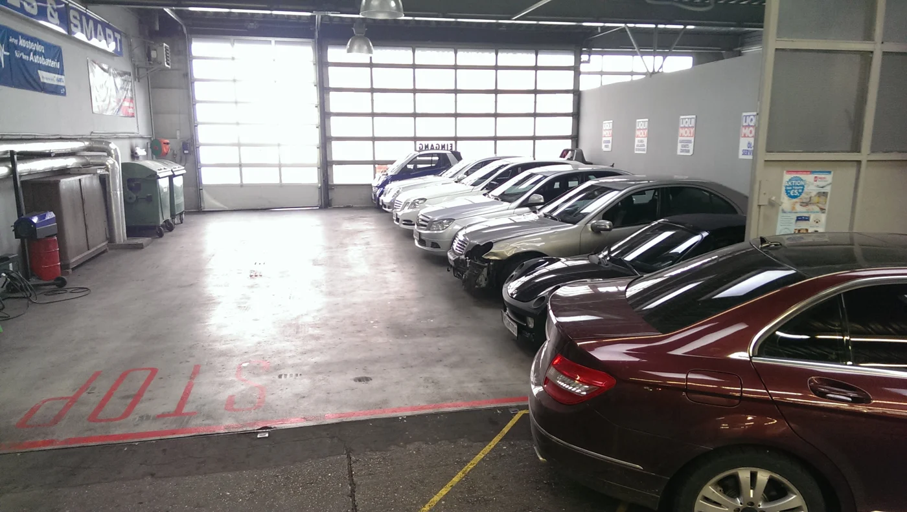
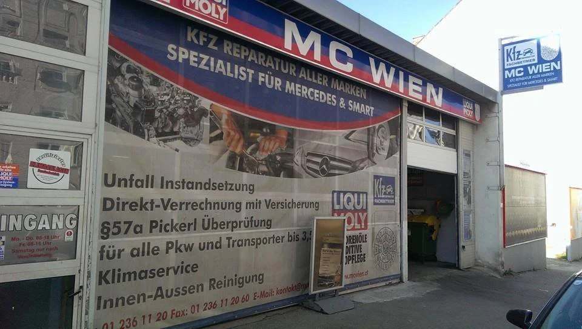
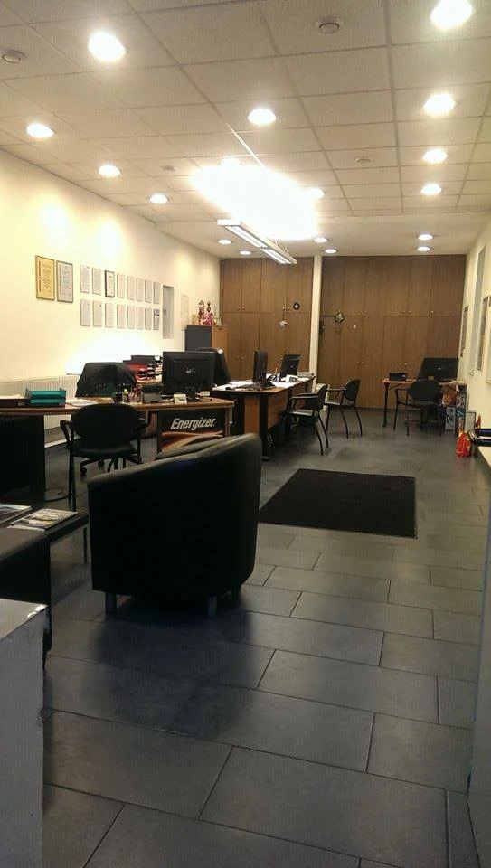
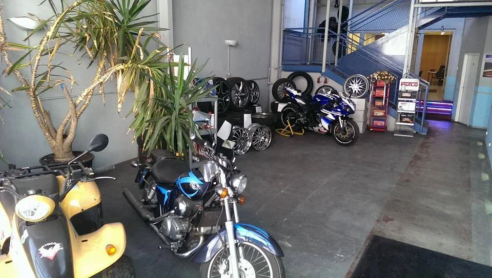

Gut betreut.
Sicher unterwegs.
Service, Pickerl und Reparatur für alle Marken.
Ihr Fachbetrieb für Mercedes und Smart in Wien.
Guter Service.
Ein klarer Weg.
Sie möchten weiterkommen. Wir kümmern uns um Ihr Fahrzeug.
Ob Wartung, ein ungewohntes Geräusch oder ein Unfallschaden: Bei MCW finden Sie Diagnose, Reparatur, Karosserie und Lack unter einem Dach. Wir beraten Sie zu den nötigen Arbeiten – verständlich und persönlich.
Ihr Anliegen besprechenFür Ihren Alltag.
Für Ihre Sicherheit.
Von der Wartung bis zum Unfallschaden:
das passende Service für Ihr Fahrzeug.
Unsicher, welche Arbeit nötig ist? Erzählen Sie uns von Ihrem Anliegen.
Persönlich beraten lassenDas gesamte Leistungsangebot +
Service und Inspektionen · Fahrzeugdiagnose und Reparaturen · § 57a-Begutachtung bis 3,5 t · Kleinschaden- und Unfallinstandsetzung · Spenglerei und Lackierarbeiten · Reifenberatung und Reifenservice · Achsvermessung · Räderwäsche und Einlagerung · Windschutz-, Seiten- und Heckscheiben · Fahrzeugpflege



MC WIEN · ERLGASSE 22Erfahrung im Detail.
Service auf Augenhöhe.
Freie Werkstatt. Persönliche Betreuung.
Unsere Werkstatt betreut alle Marken – mit besonderer Erfahrung bei Mercedes und Smart. Moderne Diagnosetechniken und laufende Schulungen helfen unserem Team, den Reparaturbedarf sorgfältig zu beurteilen.
Karosserie und Lack aus einer Hand. Für kleine Schäden und größere Reparaturen.
Ein Schaden.
Ein Ansprechpartner.
Ein Unfall bringt genug Fragen mit sich. Wir besprechen mit Ihnen, wie Ihr Fahrzeug wieder instand gesetzt wird – von der Diagnose bis zum Lack.
Reparatur besprechen
Verstehen, was nötig ist
Wir besprechen das Schadensbild und erklären die erforderlichen Arbeiten. Auf Wunsch erhalten Sie einen unverbindlichen Kostenvoranschlag.
Karosserie und Lack zusammen
Hauseigene Spenglerei und Lackiermeisterbetrieb begleiten die Instandsetzung Ihres Fahrzeugs.
Ihre Mobilität mitdenken
Fragen zur Versicherung und zu einem Leihfahrzeug klären wir persönlich – passend zu Ihrem Schaden und Ihrer Situation.
Einfach anfragen.
Persönlich weiterkommen.
Service fällig oder ein neues Anliegen? So beginnt Ihr Werkstattbesuch.
Kontakt aufnehmen
Rufen Sie uns an oder schreiben Sie uns per E-Mail.
Anliegen besprechen
Nennen Sie uns Ihr Fahrzeug und den gewünschten Service. Gemeinsam stimmen wir den Termin ab.
Mit gutem Gefühl ankommen
Sie finden MCW in der Erlgasse 22, 1120 Wien.



Vertrauen entsteht.
Auch durch Erfahrung.
Lesen Sie auf Google, wie andere Kundinnen und Kunden ihren Besuch bei MCW erlebt haben.
Bewertungen auf Google ansehenIhre Fragen.
Unsere Antworten.
Noch etwas offen? Wir helfen Ihnen persönlich weiter.
MCW kontaktierenWie kann ich einen Termin anfragen?+
Rufen Sie uns unter 0699 102 01 605 an oder schreiben Sie an kontakt@mcwien.at. Den Termin stimmen wir persönlich mit Ihnen ab. Die Website des Betriebs weist aktuell auf eine Festnetzstörung hin.
Betreuen Sie nur Mercedes und Smart?+
Nein. MCW ist eine freie KFZ-Werkstatt für alle Marken, mit besonderem Schwerpunkt auf Mercedes und Smart.
Kann ich mein Pickerl bei MCW machen lassen?+
Ja. MCW bietet die § 57a-Begutachtung für alle Marken bis 3,5 t an. Bitte vereinbaren Sie vorab einen Termin.
Was passiert nach einem Unfall?+
Wir besprechen den Schaden und die notwendigen Arbeiten. Hauseigene Spenglerei und Lackiermeisterbetrieb ermöglichen Karosserie- und Lackarbeiten aus einer Hand. Fragen zu Versicherung und Ersatzfahrzeug klären wir individuell.
Kann ich meine Räder einlagern lassen?+
Ja. Zum Reifenservice gehören auch die Einlagerung von Sommer- und Winterrädern, Räderwäsche und Achsvermessung.
Ihr Fachbetrieb.
Mitten in Meidling.
Ein Anruf oder eine E-Mail.
Wir freuen uns auf Ihr Anliegen.
Erlgasse 22
1120 Wien
Route in Google MapsHinweis laut MCW-Website: Aufgrund einer Festnetzstörung bitte aktuell die Mobilnummer verwenden. Reguläres Festnetz: 01 / 236 1120.
Unsere Öffnungszeiten
TERMIN ANFRAGEN- Montag–Donnerstag
- 08:00–18:00 Uhr
- Freitag
- 08:00–16:00 Uhr
- Samstag & Sonntag
- Geschlossen
Geben Sie uns Fahrzeugmodell und gewünschten Service an. Wir stimmen Ihren Termin persönlich mit Ihnen ab.
Gut betreut.
Vom ersten Kontakt an.
Wartung, Pickerl oder Reparatur: Lassen Sie uns besprechen, was Ihr Auto braucht.